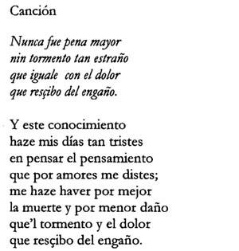
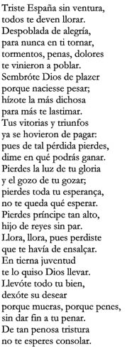
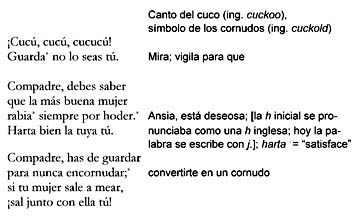

Grabaciones: Urreda y Encina
(Música de estilo franco-flamenco versus música de estilo italiano)
(Haz clic en los enlaces para escuchar las grabaciones)
Tanto Urreda como Encina escribieron poesía según las pautas tradiciones de los cancioneros (o antologías poéticas) castellanos del siglo XV, en los que predominan géneros como la canción (de versos mayormente octosílabos), el villancico, parecido a la canción, o el romance. La música de Urreda se encuadra dentro de la tradición de la música franco-flamenca, de moda en las cortes peninsulares en el siglo XV. Este estilo típicamente presenta voces en contrapunto: diferentes líneas melódicas que, aunque armoniosas, son independientes, cada una con su propio perfil rítmico. A veces resulta difícil seguir la letra, porque los cantantes no necesariamente cantan las palabras al mismo tiempo y con el mismo ritmo. Encina, quien conoció en sus viajes por Italia las nuevas tendencias de la música renacentista italiana, adoptó un estilo musical radicalmente diferente. En vez de contrapunto, Encina escribe música homofónica, es decir, todas las voces cantan en bloques armónicos que siguen básicamente el mismo ritmo. Como consecuencia, en la música de Encina, se entiende la letra mejor porque las palabras se pronuncian simultáneamente, con el mismo ritmo. (Se aprecia esta diferencia también al consultar las partituras; más abajo hay enlaces para las partituras de las canciones incluidas aquí.) En estas tres grabaciones la inclusión de instrumentos ha sido decisión de los intérpretes. (En las partituras originales no hay indicación sobre qué instrumentos deben usarse, aunque se sabe que era típico acompañar a los cantantes con instrumentos de cuerda como laúdes y vihuelas.) Los enlaces para las dos piezas de Encina están después de la canción de Urreda. La primera es un romance compuesto con ocasión de la muerte a los 18 años del príncipe heredero, Juan, hijo de Isabel y Fernando, en 1497. (Debido a su fallecimiento, la infanta Juana se convirtió en la heredera con su marido Felipe de Borgoña.) La segunda pieza es el villancico satírico Cucú, cucú. (Villancico no quiere decir "Christmas carol" sino que se trata de la designación para otro género, parecido al de la canción. Véase la introducción del poema de Urreda.)
Johannes de Urreda: Nunca fue pena mayor / partitura  |
|
Juan del Encina:  |
|
|
 |
|
| (NB: El cantante no pronuncia hoder correctamente.) | |
{kind=link}
{kind=link}
{kind=link}
Grabaciones originales: The Waverly Consort, intérpretes, 1492: Music from the Age of Discovery (EMI, 1992);
Juan del Enzina, Romances and Villancicos, Hespèrion XX, intérpretes. (Audivis, 1991)